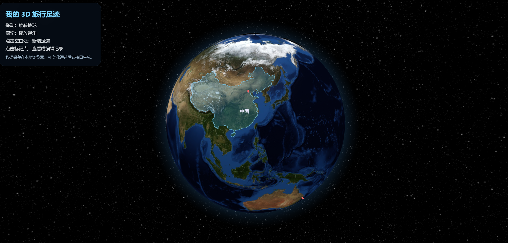

求职方向
AI 产品经理、AIGC 优化、海外内容增长、用户体验。
Profile
AI 产品经理、AIGC 优化、海外内容增长、用户体验。
AI Project
基于 Gemini AI Studio 与 Prompt 驱动流程完成的 3D 旅行记录交互平台原型。

图片待放入 assets/media/ai-demo-preview.png 点击查看在线演示展示城市标记、旅行记录与 3D 地球交互原型。当前预留为跳转入口，后续补充链接后点击图片即可打开在线演示。
Project Archive
这里先保留结构，后续可按项目卡片补充项目名称、职责、技术栈、截图、成果指标与链接。
软件项目简介、职责范围与成果指标。
技术栈、交互亮点、产品价值与演示入口。
可扩展为图片、视频、GitHub 或文档链接。